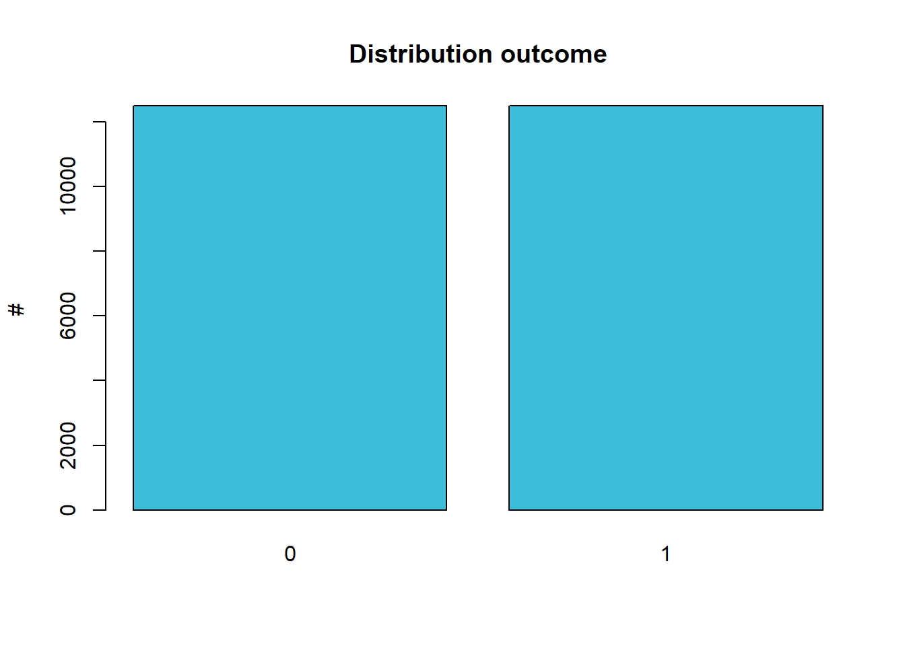
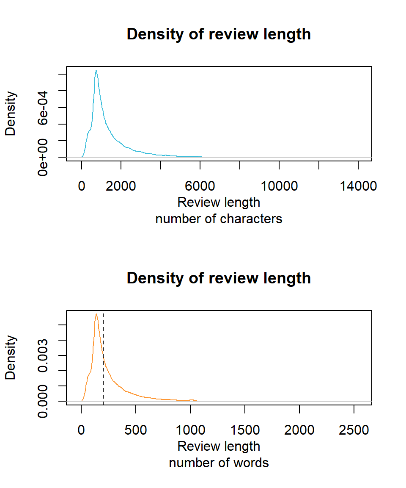
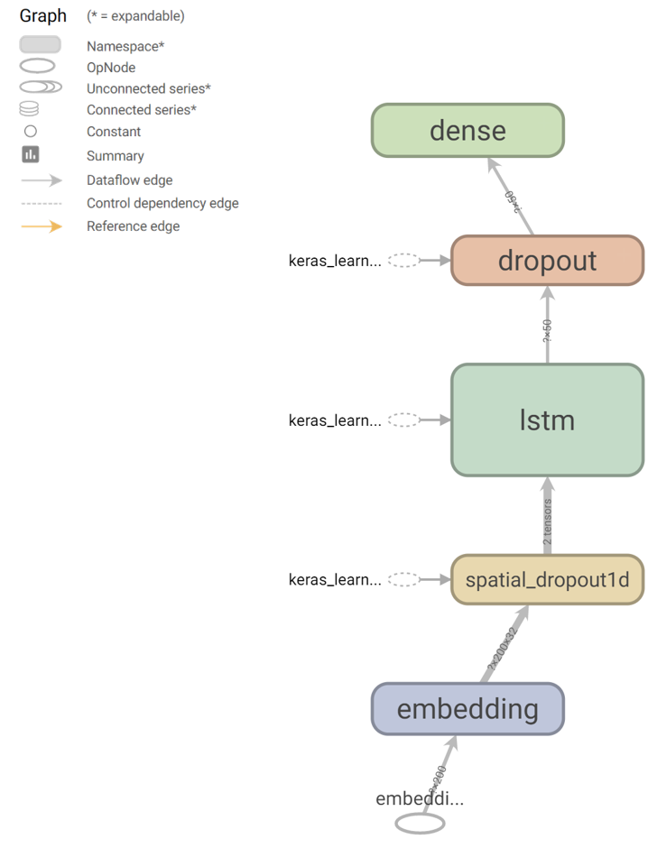
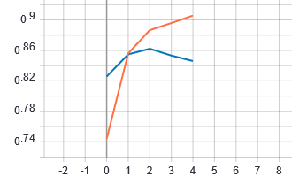

Hoofdstuk 11 Sequentie Analyse
11.1 Inleiding tot sequentie analyse
Neurale netwerken stellen ons in staat om in plaats van statische gegevens ook sequenties en data-stromen te verwerken. Voorbeelden van sequenties zijn muziek, een tekst, een presentatie, de beurs-cijfers, etc…. Dit is vooral nuttig wanneer er tussen de elementen van de sequentie een zekere autocorrelatie heerst, i.e. wanneer de sequentie ook een reeks vormt.
11.2 Sequence-To-Sequence
Een voorbeeld waarbij zowel de in- als de uitvoer van een NN de vorm van een sequentie heeft (eng: sequence-to-sequence of seq2seq), is bij ge-automatiseerde taalkundige zinsontleding. Hierbij probeert men dus een NN te maken dat voor elke woord de woordsoort (eng: part-of-speech of POS) bepaalt (onderwerp, lijdend voorwerp, lidwoord, bijvoeglijk naamwoord, werkwoord, etc…). Andere seq2seq voorbeelden zijn transcriptie (audio → tekst) en geautomatiseerde vertaling of samenvatting.
Nu is de vraag: hoe werkt dit? Hoe kan je een NN voeden met een sequentie en een sequentie terugkrijgen. Heel simpel, door telkens subsets van \(n\) elementen te nemen, als een buffer. Men spreekt dan van een context venster (eng: context window). In het voorbeeld van de zinsontleding spreekt men van \(n\)-grammen. Het principe is uitgebeeld in Figuur 11.1.
Figuur 11.1: Principe van neurale \(2\)-grammen als voorbeeld van een seq2seq strategie. Opgelet, de term \(n\)-gram slaagt op een sequentie van opeenvolgende elementen, maar de elementen kunnen van alles zijn: woorden, letters, lettergrepen, fonemen, basenparen, …
Het werken met een context venster is echter niet voldoende. Vooral wanneer de invoer-sequentie niet exact dezelfde lengte heeft als de uitvoer-sequentie, komt men vast te zitten. Wat er ontbreekt is een werkgeheugen (eng: working memory of state). De eerder besproken NN types hadden geen geheugen en toch werkte ze. Waarom zou men dan nu een geheugen nodig hebben? Bij het gebruik van sequenties is er vaak sprake van autocorrelatie (zie § rond Tijd en Ruimte) en moeten deze verbanden ook in beschouwing worden genomen. Vandaar dat voor sequentie-analyse een geheugen cruciaal is.
11.3 Recurrente NN
We introduceren nu recurrente NN (eng: recurrent NN of kortweg RNN), een NN dat een geheugen bevat. Voor het introduceren van dit geheugen moeten we een eerder gestelde regel doorbreken, namelijk dat noden binnen een laag niet met elkaar verbonden mogen worden (zie Stelling 7.1). We krijgen nu een netwerk zoals voorgesteld in Figuur 11.2. Het komt er in feite op neer dat een stuk van het netwerk wordt ontdubbeld om het effect van de autocorrelatie op te vangen. Men spreekt van unrolling through time.
![Architectuur voor een eenvoudig RNN. Men spreek in de literatuur van unrolling through time (nl: uitgerold in de tijd) om aan te geven dat neuronen met een verbinding naar zichzelf (woordsoort → woordsoort) worden ontdubbeld (woordsoort\(t-1\) → woordsoort\(t\)). De dikke oranje pijl geeft aan dat er een verbinding wordt gelegd tussen de overeenkomstige neuronen van de verborgen laag. De vergroting van de ontvangende neuron binnen de verborgen laag (onderaan) laat zien dat er een extra functie nodig is om het samenvoegen (eng: concatenation) van de huidige met de eerdere invoer mogelijk te maken.](img/rnn-01.svg)
Figuur 11.2: Architectuur voor een eenvoudig RNN. Men spreek in de literatuur van unrolling through time (nl: uitgerold in de tijd) om aan te geven dat neuronen met een verbinding naar zichzelf (woordsoort → woordsoort) worden ontdubbeld (woordsoort\(t-1\) → woordsoort\(t\)). De dikke oranje pijl geeft aan dat er een verbinding wordt gelegd tussen de overeenkomstige neuronen van de verborgen laag. De vergroting van de ontvangende neuron binnen de verborgen laag (onderaan) laat zien dat er een extra functie nodig is om het samenvoegen (eng: concatenation) van de huidige met de eerdere invoer mogelijk te maken.
Het backpropagation algoritme moet nu worden aangepast omdat de gewichten van de recurrente verbinden voor een bepaalde invoer dezelfde moeten zijn. De nieuwe versie van dit algoritme heet back-propagation through time (BPTT) en werkt door de afgeleiden uit te middelen en te berekenen van nieuw naar oud (details hier niet belangrijk).
11.4 Verdwijnende gradiënten
De manier hoe het backpropagation algoritme werkt veroorzaakt een onaangenaam neveneffect, namelijk dat naarmate men teruggaat naar eerdere lagen, hoe kleiner de afgeleiden (zie Backpropagation) worden. Dit effect noemt men vanishing gradiënts (nl: verdwijnen gradiënten). Bij FF-ANN bepaalt de diepte van het NN de mate van verdwijning, terwijl bij RNN we dit effect in ‘de breedte’ (van \(t-n \rightarrow t\)) kan worden waargenomen.
11.5 Long short-term memory (LSTM)
LSTM is uitgevonden om het probleem van verdwijnende gradiënten op te vangen bij recurrente netwerken. Er zijn andere gelijkaardige oplossingen, maar LSTM is de meest populaire. Naast de huidige invoer en input van het geheugen, wordt er ook een cell state4 onderhouden en doorgegeven waarin belangrijke lange-termijn informatie bewaard kan worden. Om de cell state te onderhouden, worden er drie nieuwe componenten toegevoegd:
- De forget gate: bepaalt welke lange termijn informatie vergeten moet worden, i.e. verwijderd uit de cell state
- De input gate: bepaalt welke nieuwe informatie moet worden toegevoegd aan de cell state
- De output gate: bevat logica om te bepalen welke informatie uit het werkgeheugen wordt doorgegeven
Figuur 11.3: Architectuur voor een LSTM. De blauwe pijlen geven de overdracht van de cell state weer langsheen de temporele as.
De term gate slaagt op het feit dat deze functies als sigmoid activatiefuncties als, ze converteren continue numerieke waarde naar een 0 of een 1. Geeft bij voorbeeld de forget-gate een 1, dan betekent dit dat de input vergeten mag worden. Voor een meer gedetailleerde beschrijving (valt buiten de scope van deze cursus) verwijs ik graag naar de blog van Christopher Olah, zie Christopher Olah 2015.
11.6 Sentiment analyse
Sentiment analyse is het extraheren van een emotie uit een opgegeven stuk tekst. Bedrijven kunnen bijvoorbeeld erg benieuwd naar de tevredenheid van hun klanten. Of je kan nieuwsgierig zijn naar de reactie van de bevolking op een bepaalde gebeurtenis of naar de reputatie van een bepaald merk of bepaalde persoon. Dergelijke vragen los je op door middel van een sentiment analyse.
Bij een sentiment analyse bestaat de invoer gewoonlijk uit een paragraaf of een tekst terwijl de uitvoer met slechts één enkele variabele kan worden uitgebeeld. Laten we op zoek gaan een dataset met gelabelde teksten, i.e. teksten waarbij het sentiment reeds manueel bepaald werd zodat we hiermee een algoritme kunnen trainen. Op Kaggle, dé plek voor iedere datawetenschapper die openstaat voor een uitdaging, vinden we een oefen-dataset die bestaat uit 25000 film-reviews met overeenkomstige emotie, gecodeerd als negative of positive.
Het laden van de data doen we hier in R:
set.seed(42)
sent <- "dat/sentiment.zip" %>%
unzip %>%
fread(colClasses = c(Sentiment = "factor"))
sent <- sent[sample(1:.N)]
sent %>% extract(sample(1:nrow(.), 5)) %>% kable| Review | Sentiment |
|---|---|
| its no surprise that busey later developed a tumor in his sinus cavity this film is also a poor decision but one i enjoyed fully . the first minutes is the most uninspiring minutes in any film boring bad dialouge and then with a spiderman stance busey yells the best worst line in any film ever created . . . your worst nightmare butthorn i coughed up some of my egg nog laughing so hard . that line resonates so well it even tops clooney s infamous hi freeze i m batman line . other classic moments is busey constantly getting upset for people reminding him that he got his ex cia partner killed . . . which he did by accidentally shooting him in the chest all made possible by a super slow motion flashback sequence that makes watching paint dry seem exciting . there s an ashtray to the nads punches to the face and a that wasn t my fault and you know it well the footage shows him missing the bad guy and hitting his buddy so . . . other scream out loud moments has to be his ex girl friend dropping a grenade to the ground to enable his escape a plan that defies all logic physics and absurdity . and lastly when mcbain jumps out of the thunderblast during intense guerrilla warfare and starts to run and hurdles a small object i almost wet myself . some of busey s best work by far rent or buy it today butthorn my vote is a perfect on the poo meter that is . | positive |
| well it looked good on paper nick cage and jerry buckheimer collaborate again this time on a mix of heist movie da vinci code american history and indiana jones . but oh dear this is to indiana jones what speed is to speed . a reasonable cast including john voight and harvey keitel battles against a puerile script and loses badly . the film is little more than an extended advert for the freemasons . however these freemasons are not your usual shopkeepers who use funny handshakes and play golf these freemasons are the natural descendants of the knights templar and nobody mention from hell or jack the ripper . i don t think i ve revealed any plot spoilers because there are none . there is virtually no suspense no surprises and no climax it just stops . national treasure aims for dan brown but hits the same intellectual level as an episode of scooby doo sans the humour . | negative |
| first thing first . in this genre movie the first thing you need is a good music and thats where mr . shankar and his party fails . br br music is completely pale and uneffective . on other hand there is ajay devgan who has removed a letter a from his spelling done good job but was of no use to a bad casted movies like this . br br asin is like a doll which is used to amuse public even though she is good to look at but her role in movie is to dance actually she is dancing member of a rock band and i don t think any rock band have there dancer as a member of band . br br in nut shell this movie is a piece of crap a piece of t . watch it if you wanna get fooled . | negative |
| i was interested to see the move thinking that it might be a diamond in the rough but the only thing i found was bad writing horrible directing the shot sequences do not flow even though the director might say that that is what he is going for it looks very uninspired and immature the editing could have been done by anyone with vcrs and the stock was low budget video . i would say that it wasn t even something as simple as mini digital video . br br there are some simple ways to fix a film with what the director has like through editing etc . but it is obvious that he just doesn t care . there is as much effort put in to this movie as a ham sandwich . it could be made better but that would mean extra work . | negative |
| this is the best picture about baseball since redford whacked the natural our way . dennis quaid and rachel griffiths light up the screen with a great story and a cast that seemed real enough to pull you into their lives . br br laced with dreams dripping in reality the american dream reignites after . with a true story about the devil ray s mid life rookie jimmy morris . australian born actress rachel griffiths plays a native west texan better than a lot of texans i know and dennis quaid was perfection cast as the wannabe gonnabe and humble winner with as much psychological baggage as the average viewer in the audience . it s real . the on screen chemistry works . if you like baseball heart warmers you re going to love this film . the ingredients for americana and apple pie were all in there . my popcorn became the a la mode . br br and hey buy the cd the music rocks and carries the story magnificently syncing words and music pushes the story forward exactly the way it should an area that disappoints me more often than not . br br criticisms i d have given the baseball to somebody else . but quaid has something to teach us all about character and heart . st . rita and the nuns were a nice decoration but they never really found their place in the story to open and close around them . a little long . worth every minute in the last analysis . . br br | positive |
Tijdens het uitlezen van de data geven we mee dat het sentiment een factor is. Dat is in principe niet zo heel erg belangrijk voor deze specifieke toepassing, maar over het algemeen is het wel belangrijk dat elke variabele op de juiste wijze wordt geïnterpreteerd. Vooral in R zijn de meeste methoden er immers op voorzien op dit type uit te lezen. Omdat we echter de data toch naar Python zullen doorsturen, zijn we verplicht om {negative, positive} te hercoderen naar {0, 1}. De rm functie op de laatste lijn zorgt ervoor dat de oorspronkelijke variabele wordt verwijderd om plaats te maken in het geheugen. gc staat dan weer voor garbage collection, iets wat elke ontwikkelaar mee vertrouwd zou moeten zijn.
Misschien toch kort een overzicht van de twee variabelen. Voor wat betreft de emotie, zien we dat er net evenveel positieve als negatieve film-reviews in de dataset set, we zeggen dat de dataset voor deze variabele gebalanceerd is:

We kunnen ook eens kijken naar de verdeling van de lengte van de reviews, uitgedrukt zowel als aantal karakters als in aantal woorden:
library(stringr)
par(mfrow = 2:1)
x %>% nchar %>% density %>% plot(main = "Density of review length",
xlab = "Review length\nnumber of characters", col = 1)
x %>% str_count("\\w+") %>% density %>% plot(main = "Density of review length",
xlab = "Review length\nnumber of words", col = 2)
abline(v = 200, lty = 2)
We gaan nu over naar Python, alwaar we de reviews gaan voorbereiden voor verder onderzoek. Eén van de eerste stappen binnen een NLP analyse is bijna altijd het indexeren van de onderdelen waarin men geïnteresseerd is (eng: tokenize, waarbij elke onderdeel als token wordt bestempeld). In dit geval zullen we de reviews in afzonderlijke woorden opsplitsen terwijl we ons ontdoen van leestekens (eng: punctuation) net omdat de woorden vermoedelijk een voorspellende waarde hebben naar emotie toe. Verder zullen we elke film-review omzetten naar een sequentie van woorden met een exacte lengte van 200 (zie ook stippellijn in bovenstaande grafiek). Is de review langer, dan wordt deze bruusk afgekapt op 200 woorden. Uiteraard zijn hier betere manieren denkbaar om deze stap informatie-bewuster te maken. Is de film-review korter dan 200 woorden, dan wordt de sequentie aangevuld nulwaarden.
from tensorflow.keras.preprocessing.text import Tokenizer
from tensorflow.keras.preprocessing.sequence import pad_sequences
most_freq_top = 5000
review_max_len = 200
tokenizer = Tokenizer(num_words = most_freq_top)
tokenizer.fit_on_texts(r.x)
encoded_docs = tokenizer.texts_to_sequences(r.x)
padded_sequence = pad_sequences(encoded_docs, maxlen = review_max_len) Laten we alvast controleren dat de tokenizer het verwachte resultaat oplevert. Eerst bekijken we de eerste review, na indexering:
## [1] 702 1801 1587 308 382 14 30 4 1 117 99 124 91 10 102 1 64 284 8 14 37
## [22] 1163 14 86 4 1 4919 21 422 23 28 91 1 171 18 2 272 141 39 1 375 42
## [43] 1 9 269 4 1 4919 8 43 576 23 28 77 1 171 184 3930 1983 3161 1140 1023 688
## [64] 2 1 2280 43 1256 5 1 18 1 221 432 18 6 44 1 4919 257 3461 37 1335 1156
## [85] 66 702 1801 1587 308 382 46 129 3 653 331 4 146 4048 24 1 4975 162 582 19 1
## [106] 1266 2 689 241 1 241 64 1 4919 97 80 1348 10 1712 357 9 2395 3461 4976 4976Via de ‘woordenboek’ zouden we deze review moeten kunnen reproduceren:
## [1] "rock n roll high school was one of the best movies ever made i think the only reason it was so awesome was because of the ramones you couldn t have made the same movie and put something like the sex or the in place of the ramones it just wouldn t have been the same young clint howard vincent van mary paul and the hall just added to the movie the whole entire movie is about the ramones especially joey so everybody showed see rock n roll high school if your a huge fan of real punk not the sissy new crap but the loud and fast kind the kind only the ramones could do r i p rest in peace joey dee dee"De oorspronkelijke tekst was als volgt:
## [1] "rock n roll high school was one of the best movies ever made i think the only reason it was so awesome was because of the ramones you couldn t have made the same movie and put something like the sex pistols or the clash in place of the ramones it just wouldn t have been the same . dey young clint howard vincent van patten mary woronov paul bartel and the hall monters just added to the movie . the whole entire movie is about the ramones . . . especially joey so everybody showed see rock n roll high school if your a huge fan of real punk . not the sissy new crap . . . but the loud and fast kind . the kind only the ramones could do . r . i . p rest in peace joey ramone . dee dee ramone"Merk op dat leestekens inderdaad verdwenen zijn, dat alles in kleine letters staat (maar dat was ook al zo in het origineel) en dat er woorden ontbreken, namelijk de woorden die niet in de top 5000 van de meest voorkomende woorden staan. Merk ook op dat in het origineel stukken tekst lijken te ontbreken. Heb je enig idee waarom dit het geval zou zijn?
De padded_sequence variabele bevat alle afgekapte reviews in één grote 2-dimensionale matrix:
## (25000, 200)## array([ 0, 0, 0, 0, 0, 0, 0, 0, 0, 0, 0,
## 0, 0, 0, 0, 0, 0, 0, 0, 0, 0, 0,
## 0, 0, 0, 0, 0, 0, 0, 0, 0, 0, 0,
## 0, 0, 0, 0, 0, 0, 0, 0, 0, 0, 0,
## 0, 0, 0, 0, 0, 0, 0, 0, 0, 0, 0,
## 0, 0, 0, 0, 0, 0, 0, 0, 0, 0, 0,
## 0, 0, 0, 0, 0, 0, 0, 0, 0, 702, 1801,
## 1587, 308, 382, 14, 30, 4, 1, 117, 99, 124, 91,
## 10, 102, 1, 64, 284, 8, 14, 37, 1163, 14, 86,
## 4, 1, 4919, 21, 422, 23, 28, 91, 1, 171, 18,
## 2, 272, 141, 39, 1, 375, 42, 1, 9, 269, 4,
## 1, 4919, 8, 43, 576, 23, 28, 77, 1, 171, 184,
## 3930, 1983, 3161, 1140, 1023, 688, 2, 1, 2280, 43, 1256,
## 5, 1, 18, 1, 221, 432, 18, 6, 44, 1, 4919,
## 257, 3461, 37, 1335, 1156, 66, 702, 1801, 1587, 308, 382,
## 46, 129, 3, 653, 331, 4, 146, 4048, 24, 1, 4975,
## 162, 582, 19, 1, 1266, 2, 689, 241, 1, 241, 64,
## 1, 4919, 97, 80, 1348, 10, 1712, 357, 9, 2395, 3461,
## 4976, 4976])We kunnen nu beginnen aan de opbouw van de architectuur van het LSTM netwerk:
from tensorflow.keras.models import Sequential
from tensorflow.keras.layers import LSTM,Dense, Dropout, SpatialDropout1D
from tensorflow.keras.layers import Embedding
embedding_vector_length = 32
model = Sequential()
model.add(Embedding(most_freq_top, embedding_vector_length, input_length = 200))De eerste laag is een embedding laag. De term kwamen we eerder al tegen bij het beschrijven van de autoencoder, maar nu breiden we de betekenis een beetje uit:
In de documentatie van Keras staat duidelijk beschreven dat een embedding laag als eerste laag moet gebruikt worden binnen het netwerk. Ook lees je daar de omschrijving van de verwachte parameters, waarvan de belangrijkste de dimensies zijn van de invoer en uitvoer (zie Figuur hieronder).
Figuur 11.4: Embedding laag met visuele voorstelling van de parameters.
De volgende laag die we toevoegen is een speciale vorm van de Dropout laag, die later in het netwerk trouwens ook toegevoegd zal worden. Bij SpatialDropout1D wordt in feite een ganse feature map verwijderd in plaats van specifieke nodes. Het komt erop neer dat gemiddeld 8 van de 32 vectoren van de embedding-laag worden meegenomen terwijl de rest genegeerd wordt. Bij elke epoch wordt er opnieuw gerandomiseerd.
De eigenlijke implementatie van LSTM gebeurt d.m.v. de gelijknamige functie binnen Keras.
Units geeft het aantal neuronen weer zonder rekening te houden met het geheugen, dropout en recurrent_dropout geven de fractie van de invoer resp. van de vorige geheugencel weer (binnen deze laag) die zal worden genegeerd. Standaard is de activatie-functies tanh en sigmoid (voor recurrente stap). Merk op dat alles wat te maken heeft met de cell-state volautomatisch gebeurt.
Rest ons om nog een (gewone) dropout toe te voegen en af te sluiten met de enige node in de output laag van ons netwerk (omdat we gewoon positive = 1 of negative = 0 willen voorspellen).
Het netwerk zoals gevisualiseerd door Tensorboard (na uitvoeren van onderstaande code) ziet er als volgt uit:

We compileren het model zoals voorheen:
Rest ons nu om het model uit te voeren. We vertrekken vanaf de padded_sequence zodat de input een vast formaat heeft. We geven mee dat 20% van de data gebruikt mag worden voor de validatie dataset. We houden 5000 reviews en overeenkomstige emoties opzij als test dataset. Dit kan door gewoon de eerste 20000 te selecteren omdat we eerder de set van reviews ge-shuffled hebben.
from keras.callbacks import TensorBoard
from keras.callbacks import ModelCheckpoint
import numpy as np
checkpoint = ModelCheckpoint(
"tf/sent_best.hdf5", monitor = "val_loss", verbose = 1,
save_best_only = True, mode = "auto", period = 1)
accuracy = model.fit(
padded_sequence[0:20000,],
np.array(r.y)[0:20000],
validation_split = 0.2,
verbose = 0,
epochs = 5,
batch_size = 32,
callbacks = [TensorBoard(log_dir = "tf"), checkpoint])Hier is de evolutie van de accuraatheid op de training set (oranje) en de validatie set (blauw) zoals TensorBoard het aangeeft:

In R kunnen we dezelfde grafieken reproduceren:
py$accuracy$history %>%
as.data.table %>%
extract(, .(accuracy, val_accuracy)) %>%
ts %>%
plot (main = "Evolution of accuracy")Resultaten sentimentanalyse in R
Op basis van de bovenstaande grafiek, kunnen we besluiten dat het voldoende is om slechts 2 epochs de trainen. De finale accuraatheid bekomen we door een voorspelling te doen op de test dataset.
model.load_weights(checkpoint_path)
prediction = model.evaluate(
padded_sequence[20000:25000,],
np.array(r.y)[20000:25000])Het finaal resultaat op ongeziene test dataset is als volgt:
py$prediction$history %>%
as.data.table %>%
extract(, .(accuracy, val_accuracy)) %>%
ts %>%
plot (main = "Evolution of accuracy")Laten we nu zelf eens nieuwe reviews verzinnen en kijken wat het model teruggeeft:
new_review <- c(
"I am not sure I understand all aspects of the movie,
but overall I loved the atmosphere",
"This was crap, from beginning to end.",
"This movie was so bad that I almost started to love it")py$new_review_prepped %>% (py$model$predict) %>% extract(, 1) %>%
multiply_by(100) %>% sprintf("%.2f%%", .)[1] "96.09%" "35.46%" "49.16%"Zeer goed resultaat, maar zoals verwacht heeft het model het nog moeilijk met cynisme.
Bronvermelding
Christopher Olah, 2015. Understanding lstm networks [WWW Document] [Online; accessed 2020-10-28]. URL http://colah.github.io/posts/2015-08-Understanding-LSTMs/
Komt overeen met wat we in tal van programmeertalen met de term context zouden aangeven↩︎